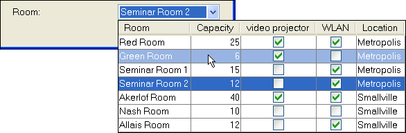
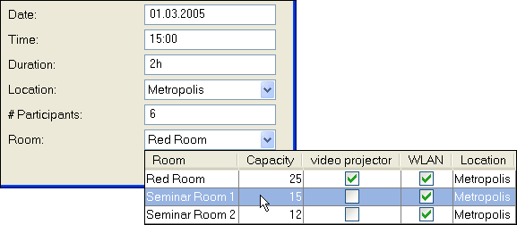
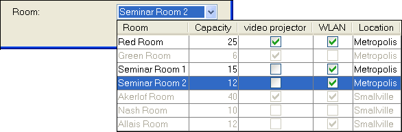
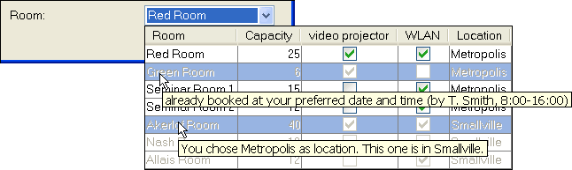

You have CVS access? Feel free to modify this document, add comments, etc.
Other option: Leave a comment in the forum.
There has been some discussion going on about a new, extended version of JComboBox. Originating in a request for supporting multiple columns in a JComboBox other possible useful features were identified.
The mentioned discussions are in particular so far:
JXComboBox - Small table demo and questions
JXComboBox - What would you like to have built-in?
ComboBoxBinding
Also have a look at our little demonstration.
This document will list some common feature requests for JComboBox and then propose some features that could be provided by the JDNC project.
The net is full of questions about how to add a certain feature to JComboBox. Some popular ones are described in the following sections.
When choosing an item from a list with a combobox it is sometimes desirable to supply more information about the items in question. An example: A user needs to choose a room for a meeting in a data entry form. It might be desirable for him to know more about the room than just its number. In which building is it located? What is its capacity? Are there any special facilities like video projectors, internet connection?

In the described situation it might also be of interest to filter the available list based on other user input. Assume that the form also contains fields for the location of the meeting (meaning city/building), the number of participants and date/duration. The could contain only those rooms that actually fit the user's needs. Rooms without sufficient capacity, rooms in another city/building or rooms that are already occupied for the chosen date could be omitted.

Sometimes it is not desirable to completely ommit items. Users might be confused that their preferred item is not in the list ("I always book the green room. Where is it?" User calls the support line...). Disabling an item indicates to the user, that the system knows about the item, but it is not possible to select it right now.

Another way to provide extra information (apart from the multiple columns) are tooltips that popup when the user moves the mouse over an item in the list. This would be a nice way to indicate that a room is already occupied for the given time (to prevent: ("I always book the green room. Why can't I select it?" User calls the support line...).

This is another way to provide extra information. On the left or right hand side of the actual list item (text description) is an icon that either is a visual representation of the item or gives some extra information. E.g. a red box for an occupied room, a green box for a room that is available.
This is a mechanism to let the user edit the list without the need to open another dialog. This is sometimes preceded by a dialog to make sure the user does not add an item by accident. A prominent example is the addressbar of a browser, that contains all URLs that have been entered previously (including those with spelling errors...).
This is a mechanism to help the user select an item faster. The first items in the list are normally items that either have been frequently chosen in the past or that have been chosen most recently. An example for the frequency based approach is a font selector that keeps the most used fonts at the top of the list. An addressbar for a browser could be used with both approaches.
This is a way to seperate semantically different items. In case of the HistoryComboBox one might want to keep the most frequently chosen items in the top followed by a seperator and the regular items.
Searching for an item in a combo box can be cumbersome if the box contains a lot of items. If the user knows what he is looking for, it should be sufficient to enter a few starting characters of the desired item and let the computer look for matching entries.
This is a prominent option to make sure that the user actually selects something. A intial form might contain
a combobox that says "Choose a room...", however the currently selected item is not "Choose a room..." but
null.
While many of the above features can be realized with minor changes to listeners, renderers, etc. there are special cases when the only option is to provide a completely custom component for the popup. One of the most famous ones is probably a datepicker.
All of the items above could be addressed, but how and in which order? I think that some of the items don't need an implementation but just a hint on how to do it: good documentation with examples on how to achieve common issues. Other items can't be resolved with a few lines of code and JDNC should provide code for these. Following are those features that I think should come first.
A straight forward extension to JComboBox that let developers set a custom component for the popup:
void setPopupComponent(JComponent) and JComponent getPopupComponent().
Here is a
proposal (sourcecode)
for it. Although the trick is a bit of a hack it seems to work and supplies a quick solution.
There is some extra code in here to deal with changing look&feels. As the popup component now can become wider than
the combobox itself, we need to think about some placement strategy.
A combobox that displays a table inside its popup. Navigation and selection should be as close as possible to the original JComboBox:
Comment by Ann Sunhachawee (original message):
One of the columns is the bounded value and is returned on JComboBox.getSelectedItem().
A big issue is a sizing policy for the columns (see the discussions from above). I cite Patrick here (original message):
What I'm not sure of it how to specify the width. Some options off the top
of my head:
1) auto-adjust/full: display all columns available in the combo, adjusting
col size automatically based on contents
2) auto-adjust/max pix: display all columns, but limit the total
displayable drop down by pixel size
3) % of combo: display drop-down at max % of combo preferred width
All of these have limitations. One would like to avoid horizontal
scrolling on a drop down at all costs. On the other hand, doing that will
depend on where the combo is positioned on the form, and the screen
resolution.
I haven't had to do this in awhile, but seem to remember that % width
worked pretty well. Auto-adjust/full works for small combos (e.g. where
total width is never that large), but not good if you have too many cols
on your drop-down. Limiting by pixels is not portable across resolutions.
Note that in the recent chat on java.net there has been a general request for a feature like this one:
Dan: For JTable, please, please, please, also give us a simple way to size a column to best fit the contents (that is, without us writing the explicit code).
There is a first implementation (far from being perfect) for this in the current CVS (JTableComboBox.resize()).
Maybe this should be considered for JXTable in general. The mouse-over effect might also be a candidate that could
be of use not in JXComboBox only.
I wrote a lengthy article about this, so I won't go into the details. JXComboBox should have some simple form of autocompletion integrated. Easy to use: a method to enable or disable autocompletion. Depending on whether the combobox is editable in this moment the autocompletion would be strict or non-strict. Autocompletion is also a feature that could be generalized and used with a JTextField only or together with a JTextField and JList/JTable (but this is certainly not on the agenda now).
Ricardo Lopes has recently shown his versions of a color- and a smiliechooser. It could well be that some standard behaviour for grid-like components could be extracted (mouse-over effect, keyboard navigation).